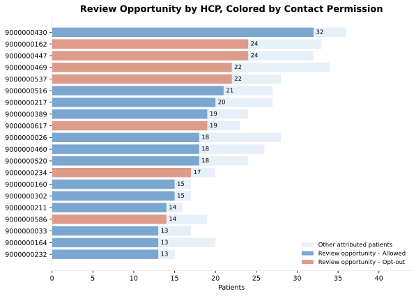
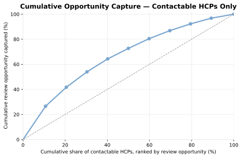
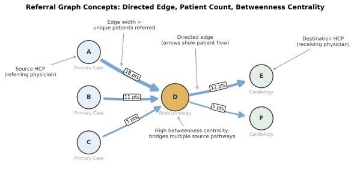
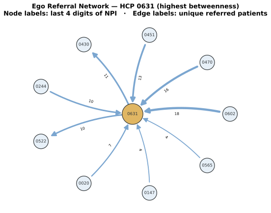
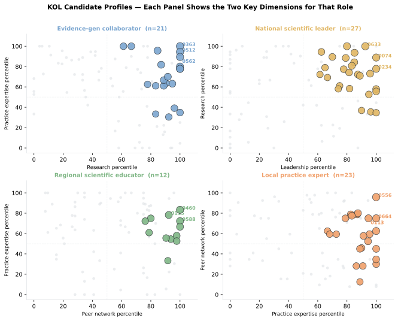
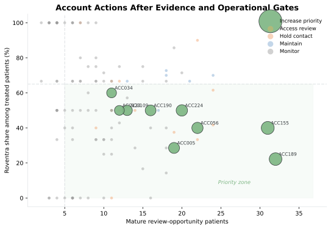
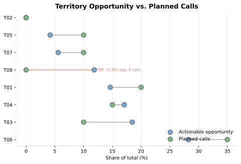

Chapter 6: HCP and Account Targeting
Chapter 5 produced patient journeys for patients with a qualifying Type 2 diabetes diagnosis. The field team now needs to convert that evidence into a 4-week HCP and account plan. The source roster contains 281 HCPs. A usable plan must take into account eligibility, current contact permission, account context, and where limited field capacity should go.
The chapter works through 6 planning questions:
- Which HCPs and accounts can the field team actually work in this cycle? We start with the roster, then apply territory, account, and permission rules to define the usable target list.
- When a patient appears in the journey data, which HCP should that patient count toward? We need one declared attribution rule so the same patient does not drift across multiple HCPs.
- Which referral patterns matter for planning? This shows whether an account stands alone or sits inside a referral path that affects diagnosis, treatment flow, or follow-up.
- Which HCPs show enough scientific activity to justify medical-affairs review? Here we look for scientific signals such as publications, congress activity, and peer connections, not commercial value.
- Do the eligible HCPs fall into a small number of usable engagement patterns? If they do, those patterns can shape message choice, channel choice, and contact timing.
- After those rules are applied, which accounts and HCPs make the 4-week call plan?
By the end of the chapter, you will produce 4 concrete outputs. The first is an HCP-account evidence table that shows attributed patients, account affiliation, permission status, and the rule-based action. The second is a referral summary that shows which local specialty pathways matter for planning. The third is a medical-affairs review table that records the scientific signals behind each proposed KOL role. The fourth is a validated k-means segmentation table that assigns each eligible HCP to an engagement segment. You will then use those outputs to build a 4-week call plan that fits the account rules, HCP rules, and territory capacity.
Note: All products, patients, HCPs, accounts, payments, scientific activities, referrals, and events in this chapter are fictional and synthetic.
6.1 Generate Supplemental Datasets
Chapter 6 uses the same identifiers and source tables from Chapters 3. A chapter specific generator writes supplemental output data under ch06_hcp/data/generated/.
Run the following command from the repository root:
uv run python ch06_hcp/scripts/generate_ch06_data.py
Chapter 6 supplemental data
hcp_account_affiliations: 281 rows
contact_permissions: 281 rows
attribution_events: 16,242 rows
current_treatment_state: 6,393 rows
referral_episodes: 1,663 rows
scientific_profiles: 281 rows
scientific_evidence: 2,026 rows
scientific_collaborations: 724 rows
medical_reviews: 430 rows
engagement_signals: 281 rows
transparency_review: 237 rows
territory_capacity: 8 rows
Wrote Chapter 6-only data to ch06_hcp/data/generated
The generator creates effective-dated affiliations, field-promotion permission, longitudinal HCP events, current treatment state, T2D referral episodes, scientific evidence, medical review, engagement evidence, payment transparency, and territory capacity.
Listing 6.1: Load the complete evidence package
from pathlib import Path
import sys
import pandas as pd
ROOT = Path.cwd().resolve()
SCRIPT_DIR = ROOT / "ch06_hcp" / "scripts"
sys.path.insert(0, str(SCRIPT_DIR))
from run_analysis import run_analysis
results = run_analysis(ROOT)
headline = pd.Series({
"Journey patients": results["attribution_comparison"].patient_id.nunique(),
"Eligible-roster patients": results["patient_hcp"].patient_id.nunique(),
"Eligible HCPs": results["hcp_features"].npi.nunique(),
"Eligible accounts": results["account_targets"].account_id.nunique(),
})
print(headline.to_string())
Journey patients 6393
Eligible-roster patients 1556
Eligible HCPs 158
Eligible accounts 114
The target universe uses relevant specialty, assigned geography, and an active HCP-account affiliation as of December 31, 2024. 1,556 of 6,393 journey patients is eligible after the selected HCP is joined to that universe.
6.2 Assign Patient to an HCP
The target list needs one HCP owner per patient. A patient can see the diagnosing HCP, a frequently visited HCP, and a later specialist during the observation window. That choice is not trivial, so we compare 3 rules:
| Rule | Definition | Business meaning |
|---|---|---|
| Index HCP | Rendering HCP on the diagnosis index date | Owner of the qualifying diagnosis event |
| Plurality HCP | Most frequent relevant HCP within 180 days of index | Longitudinal manager around diagnosis |
| Latest HCP | Latest relevant HCP through the cutoff | Most recent observed treating relationship |
The chapter uses the index HCP as its primary rule because the field question starts with the diagnosis event that put the patient into the Chapter 5 patient journey cohort. The plurality rule answers a different question. It shifts ownership toward the HCP who handled the most qualifying visits around diagnosis. The latest rule shifts ownership toward the most recent observed relationship before the cutoff.
A sensitivity study runs patient ownership under these three rules and checking how much HCP volume and HCP eligibility move. If we switch from the index rule to the plurality rule, 1,986 patients move to a different HCP and 133 HCPs cross the 5-patient floor used later in the chapter. If we switch from the index rule to the latest rule, 2,264 patients move and 146 HCPs cross that same floor. We keep the index rule because it matches the opening business question.
Listing 6.2: Measure attribution agreement
agreement = results["attribution_summary"].copy()
agreement["agreement_rate"] = agreement["agreement_rate"].map(
lambda value: f"{value:.1%}"
)
print(agreement.to_string(index=False))
comparison patients_with_both same_hcp agreement_rate
Index vs plurality 6393 4407 68.9%
Index vs latest 6393 4129 64.6%
All 3 rules 6393 4052 63.4%
The index rule agrees with plurality for 68.9% of patients and with latest for 64.6%. The disagreement is large enough to change HCP counts, threshold status, and downstream planning. A field plan should therefore specify the attribution rule with it.
PAT02034 remains with HCP0280 under all 3 rules.
trace = results["attribution_comparison"].query(
"patient_id == 'PAT02034'"
)
print(trace.to_string(index=False))
patient_id index_npi plurality_npi latest_npi all_rules_agree
PAT02034 9000000280 9000000280 9000000280 True
6.3 Build the HCP Table
The 158 eligible HCPs are not equally worth pursuing. Some hold many patients but few are currently in a position where a field conversation might change anything. Others have limited volume but nearly all of it is actionable. And for some HCPs, contacting them at all is off the table because they have opted out of field promotion.
6.3.1 HCP signals
To sort through this, the chapter builds a row-per-HCP evidence table with three signals: how much of the HCP's attributed patient book is actionable, how much of that book is already on Roventra, and whether field promotion is currently permitted.
(1) Signal One: what makes a patient "actionable." Two patient groups are most relevant to a field conversation:
- Competitor-treated patients: currently on a product other than Roventra. These patients represent a treatment review opportunity.
- Mature untreated patients: have been in the cohort for at least 60 days but have not yet started any treatment. The 60-day threshold filters out patients who are too recently diagnosed for their clinical picture to be clear.
These two groups combine into a single per-HCP count called review opportunity
(2) Signal Two: how adopted Roventra already is. Review opportunity tells you where the potential lies; the current Roventra share tells you the starting point. An HCP with a low share and high review opportunity looks different from one with a high share and little room left to grow.
(3) Signal Three: whether the field can contact the HCP at all. An HCP opts out of field promotion may still remains reachable through other channels.
Listing 6.3: Inspect the highest-volume HCP evidence
columns = [
"npi", "account_id", "cohort_patients", "treated_patients",
"roventra_starts", "competitor_treated", "untreated_mature",
"review_opportunity", "contact_permission_status",
]
top_hcps = results["hcp_features"].sort_values(
["cohort_patients", "npi"], ascending=[False, True]
)
print(top_hcps[columns].head(6).to_string(index=False))
npi account_id cohort_patients treated_patients roventra_starts competitor_treated untreated_mature review_opportunity contact_permission_status
9000000430 ACC189 36 9 5 4 25 29 Allowed
9000000469 ACC121 34 10 4 6 21 27 Opt-out
9000000162 ACC062 33 13 10 3 19 22 Opt-out
9000000447 ACC216 32 12 4 8 17 25 Opt-out
9000000026 ACC226 28 11 9 2 15 17 Allowed
9000000537 ACC079 28 6 3 3 18 21 Opt-out
The top HCP by volume (36 attributed patients) has 29 in review opportunity and is Allowed for field promotion. The next two HCPs have nearly as much volume but are Opt-out, which means their review opportunity cannot be worked through the field channel in this cycle. Volume alone does not determine where the field should spend time.

Figure 6.4. Review opportunity ranked highest to lowest, colored by contact permission. An HCP near the top with a red bar holds substantial opportunity but cannot be worked through the field channel in this cycle. Synthetic data.
Out of the 158 eligible HCPs, the concentration analysis focuses on 112 HCPs with Allowed field-promotion status.
6.3.2 Cumulative capture curve
Figure 6.4 shows individual opportunity and permission at the HCP level. Cumulative capture curve in figure 6.5 answers the planning question that follows: if the field can only reach a subset of the 112 contactable HCPs this cycle, how much of the total contactable opportunity does that cover?
The chart ranks the 112 contactable HCPs from highest to lowest review opportunity. It then adds them one decile at a time, first the top ~10% HCPs, then the next ~10%, and so on. After each decile asks: what percentage of the combined review opportunity across all 112 HCPs is now covered?
The dashed diagonal reference line is the baseline you would see if every HCP held an identical share of review opportunity: calling the top 10% of HCPs would capture exactly 10% of opportunity, calling 30% would give 30%, and so on. In that world, it would not matter which HCPs you called first. The actual curve rises steeply above the diagonal because opportunity is concentrated: calling the top 30% of contactable HCPs (about 34 physicians) covers 54% of the total contactable review opportunity. This skew makes a prioritized plan significantly more efficient.
Listing 6.4: Measure opportunity concentration among contactable HCPs
deciles = results["decile_summary"].copy()
deciles["cumulative_hcp_share"] = deciles["cumulative_hcp_share"].map(
lambda value: f"{value:.0%}"
)
deciles["cumulative_opportunity_share"] = (
deciles["cumulative_opportunity_share"].map(lambda value: f"{value:.1%}")
)
print(deciles[[
"opportunity_decile", "hcps", "review_opportunity",
"cumulative_hcp_share", "cumulative_opportunity_share",
]].head(5).to_string(index=False))
opportunity_decile hcps review_opportunity cumulative_hcp_share cumulative_opportunity_share
1 12 214 11% 26.7%
2 11 120 21% 41.6%
3 11 100 30% 54.0%
4 11 83 40% 64.4%
5 11 68 50% 72.9%

Figure 6.5. The curve starts at (0%, 0%) and rises steeply. The top 30% of contactable HCPs by review opportunity account for 54% of total contactable opportunity. The dashed diagonal shows what equal distribution would look like. Synthetic data.
6.4 Map Referral Graph
The HCP evidence table tells you how much opportunity each individual physician holds. It does not tell you how patients arrive at that physician or who influences the diagnosis and treatment decision before they get there. Referral graph analysis answers that question by tracing repeated patient flows through the market.
6.4.1 Node, edge, and graph
Medical claims records identify a source HCP (the referring physician) and a destination HCP (the receiving physician) for each patient transition. Those pairs, along with specialty, account, and visit dates, are the raw material for the graph.
The analysis treats each distinct source–destination pair as a directed edge. The edge weight is the number of unique T2D patients who traveled that path. Edges with fewer than 3 unique patients are dropped because a single- or two-patient transfer is too idiosyncratic to represent a stable referral relationship.

Figure 6.6. Conceptual illustration of the referral graph structure used in this chapter. Nodes A–C are Primary Care physicians (blue), node D is the Endocrinologist hub (gold), and nodes E–F are Cardiologists (green). Arrow width reflects patient count on each edge. Node D has the highest betweenness centrality because it bridges multiple upstream sources to downstream specialists.
One useful graph metric is betweenness centrality: the HCP with the highest betweenness is the one whose removal would most disrupt patient flow across the network, because they sit on many paths that connect otherwise separate parts of the graph. In this market, that physician is HCP 0631. Listing 6.5 shows all edges connected to that HCP.
Listing 6.5: Inspect edges for the highest-betweenness HCP
center = results["referral_metrics"].iloc[0]["npi"] # highest betweenness
ego_edges = results["referral_edges"].loc[
results["referral_edges"]["source_npi"].eq(center)
| results["referral_edges"]["destination_npi"].eq(center)
].nlargest(10, "unique_patients")
print(ego_edges[[
"source_npi", "destination_npi", "unique_patients", "median_transition_days",
]].to_string(index=False))
source_npi destination_npi unique_patients median_transition_days
9000000602 9000000631 18 30.5
9000000470 9000000631 16 47.0
9000000451 9000000631 13 41.0
9000000631 9000000430 11 30.0
9000000244 9000000631 10 33.5
9000000631 9000000522 10 20.0
9000000020 9000000631 7 37.0
9000000147 9000000631 4 31.5
9000000565 9000000631 4 38.5
Seven primary-care physicians send patients to HCP 0631, and HCP 0631 refers out to two specialists — HCPs 0430 and 0522. This pattern of aggregating from many upstream sources and distributing to downstream specialists is exactly what betweenness centrality captures. Figure 6.7 shows the same structure as a directed network, with node labels as the last four NPI digits and edge labels as unique patient counts.

Figure 6.7. The ego network shows the highest-betweenness HCP and the ten strongest referral edges connected to that physician. Patient count labels each edge. Synthetic data.
6.4.2 Disease referal pathway
Listing 6.6 aggregates the validated referral episodes by specialty pair to show where T2D patient volume actually flows in this market.
Listing 6.6: Aggregate referral flow by specialty pair
episodes = results["referral_episodes"]
flow = (
episodes.groupby(["source_specialty", "destination_specialty"])["patient_id"]
.nunique()
.sort_values(ascending=False)
.reset_index()
)
flow.columns = ["source_specialty", "destination_specialty", "unique_patients"]
print(flow.to_string(index=False))
source_specialty destination_specialty unique_patients
Primary Care Endocrinology 1347
Endocrinology Cardiology 316
The dominant flow is Primary Care to Endocrinology, carrying 1,347 unique patients. A secondary stream continues from Endocrinology to Cardiology, carrying 316 patients with comorbid cardiovascular disease. Both pathways are large enough to be structurally meaningful for pathway education and continuity review.
6.4.3 Validate stable top pathways
Knowing which HCPs receive the most referrals is not the same as knowing which positions in the ranking are reliable. A high volume rank can reflect a single very active referrer rather than a broad, stable pattern, and a top-20 ranking in the observed data could shift if slightly different patients were in the dataset. The validation addresses both concerns.
Two signals capture ranking quality. The first is volume: how many unique T2D patients passed through that HCP across all referral episodes. The second is breadth: how many distinct source HCPs sent patients to them. An HCP with high volume but breadth of 1 receives all their referrals from a single physician, a relationship that is not a market-wide pathway. Breadth of 8 or more, by contrast, signals that many independent physicians are routing patients to the same destination.
The stability test then runs two complementary checks. The transition-window sweep refits the full graph under three window definitions, 30, 45, and 60 days, and compares the top-20 ranking across all three. An HCP that holds its position under all three windows is robust. The patient-level bootstrap draws 80 resamples from the referral episode table, each the same size as the original but drawn with replacement, so some patients appear twice and others not at all. The graph is refit on each resample and the top-20 ranking is recorded. An HCP that lands in the top 20 in 95% or more of those runs holds its position regardless of which specific patients happened to be in the data.
Listing 6.7: Review stable pathway HCPs
referral = results["referral_metrics"].merge(
results["referral_stability"][["npi", "bootstrap_top20_frequency"]],
on="npi",
).sort_values(["bootstrap_top20_frequency", "pathway_patient_volume"], ascending=[False, False])
referral["bootstrap_top20_frequency"] = (
referral["bootstrap_top20_frequency"].map(lambda value: f"{value:.1%}")
)
cols = ["npi", "specialty", "pathway_patient_volume", "pathway_breadth", "bootstrap_top20_frequency"]
stable = referral[referral["bootstrap_top20_frequency"].str.rstrip("%").astype(float) >= 90]
unstable = referral[referral["bootstrap_top20_frequency"].str.rstrip("%").astype(float) < 90]
print("--- Stable (≥ 90% bootstrap frequency) ---")
print(stable[cols].to_string(index=False))
print("\n--- Below threshold (< 90%) ---")
print(unstable[cols].head(9).to_string(index=False))
--- Stable (≥ 90% bootstrap frequency) ---
npi specialty pathway_patient_volume pathway_breadth bootstrap_top20_frequency
9000000631 Endocrinology 93 9 100.0%
9000000127 Endocrinology 87 9 100.0%
9000000045 Endocrinology 87 8 100.0%
9000000462 Endocrinology 86 8 100.0%
9000000650 Endocrinology 68 10 100.0%
9000000471 Endocrinology 63 7 100.0%
9000000215 Endocrinology 59 7 100.0%
9000000028 Endocrinology 59 5 100.0%
9000000364 Endocrinology 57 6 100.0%
9000000567 Endocrinology 54 9 96.2%
9000000115 Endocrinology 48 7 95.0%
--- Below threshold (< 90%) ---
npi specialty pathway_patient_volume pathway_breadth bootstrap_top20_frequency
9000000636 Endocrinology 46 6 87.5%
9000000647 Endocrinology 42 5 87.5%
9000000409 Endocrinology 39 3 83.8%
9000000218 Endocrinology 40 5 73.8%
9000000469 Endocrinology 45 8 70.0%
9000000170 Endocrinology 42 6 67.5%
9000000550 Endocrinology 40 5 66.2%
9000000204 Endocrinology 40 6 61.3%
9000000545 Endocrinology 37 4 47.5%
Eleven HCPs clear the 90% threshold, all Endocrinologists. Pathway stability is a separate signal from commercial review opportunity. An HCP can be a critical referral node while having low review opportunity, or vice versa, and both signals should be included in the final account plan.
6.5 Build a KOL Scientific Profile
The referral analysis identifies where patients flow through the market. A separate question is which physicians shape how T2D is understood and treated, through their research, congress leadership, peer teaching, or clinical practice. These are Key Opinion Leaders (KOLs), and medical affairs identify them.
This section builds a scientific evidence profile entirely from public and professional signals, then proposes a scientific role for each candidate. The profile is built across four domains, each normalized within specialty and career stage so that a junior researcher publishing prolifically is evaluated against peers at a similar career point, not against a senior endocrinologist with thirty years of tenure:
- Research contribution: publication roles, disease relevance, identity-match confidence, and recency. A lead or corresponding author role on a highly relevant, recent paper scores higher than a middle-author credit on a weakly related paper from a decade ago.
- Scientific leadership: conference speaking, guideline authorship, and editorial positions. This domain captures influence over how the field is organized, not just what it produces.
- Practice expertise: patient volume and specialization signals that indicate deep clinical experience in disease management, distinct from academic publication activity.
- Peer connection: scientific collaboration network position. An HCP who co-publishes with many other researchers connects scientific communities; one who is isolated may have high personal output but limited reach.
Different roles require different combinations of these domains. An evidence-generation collaborator needs strong research output and clinical grounding to run trials. A national scientific leader needs leadership signals and research credibility. A regional educator needs peer connection and practice depth to teach effectively through local networks. The role-fit formula makes each combination explicit:
| Proposed role | Role-fit formula |
|---|---|
| Evidence-generation collaborator | 65% research + 35% practice expertise |
| National scientific leader | 55% leadership + 45% research |
| Regional scientific educator | 55% peer connection + 45% practice expertise |
| Local practice expert | 70% practice expertise + 30% peer connection |
Each HCP is evaluated against every role formula; the highest-scoring role with a fit score of 65 or above becomes the proposed role and triggers a candidate flag. The score is role-specific: it answers "how well does this HCP fit the evidence-generation collaborator role?" not "how influential is this HCP overall?" There is no universal influence rank.
Listing 6.8: Inspect scientific role candidates
kol = results["kol_profiles"].loc[
results["kol_profiles"]["kol_candidate"]
]
columns = [
"npi", "specialty_1", "research_percentile",
"leadership_percentile", "practice_expertise_percentile",
"peer_connection_percentile", "proposed_role",
"role_fit_score", "evidence_confidence",
]
print(kol[columns].head(8).to_string(index=False))
npi specialty_1 research_percentile leadership_percentile practice_expertise_percentile peer_connection_percentile proposed_role role_fit_score evidence_confidence
9000000105 Cardiology 100.0 80.000000 25.000000 55.000000 National scientific leader 89.0 High
9000000206 Endocrinology 100.0 8.333333 34.782609 15.384615 Evidence-generation collaborator 77.2 High
9000000211 Endocrinology 100.0 36.363636 80.000000 70.833333 Evidence-generation collaborator 93.0 High
9000000237 Primary Care 100.0 75.000000 77.777778 91.666667 Evidence-generation collaborator 92.2 High
9000000363 Endocrinology 100.0 100.000000 100.000000 66.666667 Evidence-generation collaborator 100.0 High
9000000441 Primary Care 100.0 84.615385 77.777778 26.190476 Evidence-generation collaborator 92.2 High
9000000512 Cardiology 100.0 31.250000 94.444444 92.500000 Evidence-generation collaborator 98.1 High
9000000562 Cardiology 100.0 40.000000 89.473684 75.000000 Evidence-generation collaborator 96.3 High
Notice that these candidates arrive at similar role-fit scores through very different domain profiles. HCP0206 has a 100th-percentile research score but only an 8th-percentile leadership score. They are a prolific researcher with limited conference presence. HCP0363 scores at the 100th percentile in every domain. Figure 6.9 shows each candidate within the two dimensions most relevant to their proposed role.

Figure 6.9. Each panel focuses on one proposed role and plots the two dimensions that dominate its fit formula. Gray dots are candidates assigned to other roles. The same candidate can look strong or weak depending on which role lens is applied. Synthetic data.
Listing 6.9: Count candidates by proposed role
role_counts = (
results["kol_profiles"]
.loc[results["kol_profiles"]["kol_candidate"], "proposed_role"]
.value_counts()
)
print(role_counts.to_string())
proposed_role
National scientific leader 27
Local practice expert 23
Evidence-generation collaborator 21
Regional scientific educator 12
6.6 Fit HCP Engagement Archetypes with K-Means
The HCP evidence table tells you how much opportunity each physician holds. The referral map tells you where patients move. Neither tells you how to engage a given HCP — what message channel they respond to, whether they need detailed scientific evidence or peer practice context, and whether access barriers are a factor in their HCP–patient relationship.
Segmentation answers that question by grouping HCPs who share a similar engagement pattern into a small number of named archetypes. The field team then applies a different engagement approach to each archetype rather than treating all HCPs identically.
Why segmentation comes after the gates. K-means runs only on HCPs who have already passed the field permission and minimum evidence gates. Segmenting opt-out HCPs, or HCPs with too few attributed patients to have a reliable signal, would produce archetypes based on noise. The segment label shapes how the field engages an eligible HCP; it does not determine whether that HCP is eligible. Permission, account action, and territory capacity remain the controlling gates.
The four engagement features. K-means groups HCPs using four observed behavioral signals, each robust-scaled (median and interquartile-range normalized) to prevent any single feature from dominating because of its raw magnitude:
- Evidence-need score: how often this HCP's engagement history involves requests for clinical data, study summaries, or medical education materials
- Access-resource score: how often access barriers (prior authorization issues, formulary queries, patient assistance) appear in this HCP's patient interactions
- Digital-response rate: how reliably this HCP opens and acts on digital communications relative to peers in the same specialty
- Field-response rate: how reliably this HCP engages during in-person or phone field visits
Patient opportunity and current Roventra adoption are not features in the clustering model — they are included in the segment profile only for interpretation after the clusters are formed. Mixing outcome metrics into the clustering features would make the model circular: the plan would send more calls to high-opportunity segments by construction, not by evidence of engagement response.
The algorithm minimizes within-cluster squared distance across these four features:
Here, \(x_i\) is the 4-feature vector for HCP \(i\), \(c(i)\) is the assigned cluster, and \(\mu_{c(i)}\) is the cluster centroid.
Choosing the number of clusters. The analysis compares \(k=3\) through \(k=6\) and selects based on three criteria: silhouette score (how cleanly each HCP fits its cluster compared to the nearest alternative), seed stability (whether the same cluster structure emerges with a different random seed), and bootstrap assignment stability (whether an HCP's cluster assignment is consistent when the fitting sample is resampled). A cluster must also be operationally large enough to be meaningful — at least 10% of the fitted population or 8 HCPs, whichever is larger. Candidate values within 0.02 of the top composite score are compared on bootstrap stability as a tiebreaker.
Listing 6.10: Select the number of clusters
evaluation = results["cluster_evaluation"].copy()
metrics = [
"silhouette", "seed_stability_ari",
"bootstrap_stability_ari",
]
evaluation[metrics] = evaluation[metrics].round(3)
print(evaluation[[
"k", *metrics, "minimum_cluster_size",
"operational_size_pass", "selected",
]].to_string(index=False))
k silhouette seed_stability_ari bootstrap_stability_ari minimum_cluster_size operational_size_pass selected
3 0.387 1.000 0.698 14 True False
4 0.427 1.000 0.858 10 True True
5 0.388 1.000 0.778 10 True False
6 0.358 0.937 0.763 6 False False
k=4 wins on all criteria: the best silhouette score (0.427), perfect seed stability, the highest bootstrap ARI among operationally valid solutions (0.858), and all clusters above the minimum size. k=6 fails the minimum-size gate — one cluster has only 6 HCPs, which is too small to operationalize as a distinct engagement pattern.
Listing 6.11: Inspect the operational segment profiles
profiles = results["segment_profiles"].copy()
features = [
"evidence_need_score", "access_resource_score",
"digital_response_rate", "field_response_rate",
]
profiles[features] = profiles[features].round(2)
print(profiles[[
"segment_name", "hcp_count", *features,
"engagement_pattern",
]].to_string(index=False))
segment_name hcp_count evidence_need_score access_resource_score digital_response_rate field_response_rate engagement_pattern
C0: Digital evidence seeker 12 0.81 0.60 0.79 0.20 Approved digital evidence, then field review
C1: Field maintenance 12 0.23 0.32 0.09 0.91 Maintenance field follow-up
C2: Digital maintenance 22 0.30 0.32 0.72 0.29 Digital maintenance, then field review
C3: Field evidence builder 10 0.74 0.59 0.15 0.82 Field evidence discussion
The four archetypes are genuinely distinct. C0 and C3 both have high evidence need but split on channel: C0 responds to digital materials while C3 requires in-person evidence discussion. C1 and C2 both have low evidence need but also split on channel: C1 responds primarily to field visits while C2 is predominantly digital. This means an HCP with high evidence need who primarily uses digital channels (C0) would get a different engagement sequence than a high-evidence-need HCP who needs field interaction (C3) — even if they have identical review opportunity.
Figure 6.10 shows the four archetype profiles as small-multiples bar charts — one panel per segment. Figure 6.11 plots the validation metrics across k values so the selection rationale is visible.

Figure 6.10. Each panel is one engagement archetype. The dashed line marks 0.5 (mid-range). C0 and C3 both show high evidence-need bars but diverge on which response channel is tall; C1 and C2 both show low evidence-need bars but split the same way on channel. Synthetic data.

Figure 6.11. k=4 achieves the best silhouette score and the highest bootstrap ARI among solutions that pass the minimum cluster-size gate. Synthetic data.
The deployment file for each HCP keeps the numeric cluster ID, profile name, centroid distance (how far this HCP's features are from the archetype center), assignment stability (bootstrap frequency), model version, and engagement pattern. HCPs who passed the account and HCP gates but fell outside the fitted segmentation population receive Not clustered and a standard field-review pattern — they remain executable but with a generic rather than archetype-specific engagement approach.
6.7 Apply the Account Action Policy
The HCP evidence table ranks individual physicians by opportunity and permission. Accounts — the clinics, hospital systems, and practice groups where HCPs work — need their own separate prioritization. An account that employs several high-opportunity HCPs but has no permitted physicians is a different planning problem than an account with one permitted HCP and strong review opportunity.
The account policy works as a sequential set of gates. Each gate answers one yes/no question. An account that fails a gate receives an action that reflects exactly which constraint applied, not a generic "low priority" label.
The gate sequence. The policy uses a prespecified scenario with documented threshold values:
| Gate | Rule | Scenario value |
|---|---|---|
| Evidence | Minimum attributed patients | 10 |
| Treated denominator | Minimum treated patients | 8 |
| Opportunity | Minimum mature review opportunity | 5 |
| Access review | Unresolved mature access signals | 2 |
| Permission | At least one permitted HCP | Yes |
| Ownership | Assigned territory | Required |
| Capacity | Territory capacity remaining | > 0 |
An account passes all gates and receives Increase priority only if it clears every row. If it fails at any gate, it receives an action that names the gate that applied.
The 65% adoption threshold deserves special attention. It is a scenario assumption — it defines the boundary above which Roventra penetration is considered adequate and a full priority call is not needed. This threshold must have a documented market rationale before a production plan is released. It is stored explicitly in the output so that the business review can see and challenge it.
The action order is applied top to bottom; earlier gates take precedence:
Monitor— evidence below floor or treated denominator too smallAccess review— unresolved access signals above triggerHold contact— no permitted HCP in this accountMaintain— account is eligible but recently contacted enough to be considered saturatedIncrease priority— all gates pass and adoption below thresholdMaintain— all gates pass but adoption is above threshold
Listing 6.12: Count account actions
print(results["account_targets"]["account_action"].value_counts().to_string())
account_action
Monitor 86
Hold contact 12
Increase priority 9
Maintain 6
Access review 1
Most accounts (86 of 114) land in Monitor — they do not yet have enough patient evidence or treated denominator to support a priority field action this cycle. Twelve are held because no HCP in the account currently has field permission. Only 9 reach Increase priority, which is the operational action driving call-plan entries.
Figure 6.12 shows each account as a point, with Roventra share on the X axis, review opportunity on the Y axis, point color for the assigned action, and point size proportional to cohort patients. The threshold lines cut the space into regions — accounts above the opportunity floor and below the adoption threshold are where the priority action applies. The gates, however, mean that even an account that looks like it belongs in the priority region by these two metrics alone may not reach priority if another gate (denominator, permission, capacity) applies first.

Figure 6.12. Priority accounts (large green dots, labeled by account ID) are the focal point. Non-priority accounts recede into the background. The shaded region is the priority zone; accounts that fall inside it but remain non-priority failed an earlier gate — denominator, permission, or access routing. Synthetic data.
How four accounts resolve differently. The four accounts below have similar surface-level evidence but receive different actions because different gates apply:
traces = results["account_targets"].set_index("account_id").loc[
["ACC155", "ACC002", "ACC121", "ACC231"],
[
"account_action", "reason_code", "cohort_patients",
"treated_patients", "review_opportunity", "roventra_share",
],
]
print(traces.to_string())
account_action reason_code cohort_patients treated_patients review_opportunity roventra_share
account_id
ACC155 Increase priority PRIORITIZE_REVIEW_OPPORTUNITY 38 15 34 0.200000
ACC002 Access review ROUTE_ACCESS_REVIEW 14 6 12 0.333333
ACC121 Hold contact HOLD_NO_PERMISSION 34 10 27 0.400000
ACC231 Monitor MONITOR_SMALL_TREATED_DENOMINATOR 25 7 21 0.571429
ACC155 clears every gate — enough patients, permitted HCPs, solid review opportunity, and adoption well below 65%. It gets the priority call. ACC002 has active unresolved access signals, so it goes to the access-review queue before commercial action is considered. ACC121 has material opportunity (27 patients) but every HCP in that account has opted out — no permitted HCP means the account is held entirely. ACC231 looks like it has good opportunity (21 patients) but only 7 treated — below the 8-patient treated-denominator floor — so it Monitors regardless of other signals. The reason code on every row names exactly which gate produced the action.
Figure 6.13 shows the gate attrition waterfall: how many accounts pass or fail at each sequential gate, and how many remain after all gates are applied.

Figure 6.13. The treated-denominator gate is the largest single filter in this scenario. After all gates, 15 accounts are field eligible. Synthetic data.
Stress-testing the policy. The adoption threshold and the opportunity floor are the two parameters most likely to be challenged in a business review. The sensitivity analysis reruns the policy across a grid of alternative values to show how the priority account count changes.
Listing 6.13: Stress-test the policy
sensitivity = results["policy_sensitivity"].query(
"minimum_account_patients == 10"
)
table = sensitivity.pivot(
index="adoption_threshold",
columns="minimum_opportunity_patients",
values="priority_accounts",
)
print(table.to_string())
minimum_opportunity_patients 4 8 12
adoption_threshold
0.45 5 5 5
0.60 9 9 9
0.75 10 10 9
The opportunity floor barely moves the count in this range — shifting from 4 to 12 minimum opportunity patients changes at most one account. The adoption threshold is what actually moves the priority list: tightening it from 60% to 45% cuts the count from 9 to 5; loosening it to 75% adds one more. This means the adoption threshold assumption belongs in the business review conversation, not buried in the code.
6.8 Select HCPs and Build the 4-Week Call Plan
The account policy produced a set of Increase priority accounts and identified which gates blocked the others. The final step converts that account-level result into an HCP-level, territory-reconciled, executable call plan.
This step is distinct from account prioritization. An account can receive Increase priority but still have no HCPs who pass the HCP-level rules — because the only permitted HCP already reached the contact cap, or because territory capacity is exhausted. The call plan makes this explicit rather than assuming that account eligibility automatically translates to HCP actions.
The call scenario. The plan covers January 1 through January 28, 2025, with these constraints:
- Maximum 2 calls per HCP in the cycle
- Account capacity from the account evidence table
- Territory capacity from the scenario table (each territory has a ceiling on total calls this cycle)
- Engagement archetype applied after eligibility — the segment shapes the call pattern, not whether the call happens
For priority accounts, the formula for suggested call count is:
The denominator of 8 is a scenario parameter: it represents the approximate number of review-opportunity patients that justify one field call. An account with 24 review-opportunity patients suggests 3 calls; an account with 4 suggests 1 call (the floor). This allocation is then capped at the HCP's 2-call maximum and the territory's remaining capacity.
Listing 6.14: Produce the executable field plan
columns = [
"territory", "account_id", "npi", "hcp_action",
"segment_name", "recommended_calls", "reason_code",
]
print(results["call_plan"][columns].to_string(index=False))
territory account_id npi hcp_action segment_name recommended_calls reason_code
T01 ACC056 9000000136 Prioritize C1: Field maintenance 2 PRIORITIZE_REVIEW_OPPORTUNITY
T04 ACC219 9000000460 Prioritize C2: Digital maintenance 2 PRIORITIZE_REVIEW_OPPORTUNITY
T04 ACC155 9000000389 Prioritize C3: Field evidence builder 2 PRIORITIZE_REVIEW_OPPORTUNITY
T05 ACC124 9000000035 Prioritize C2: Digital maintenance 2 PRIORITIZE_REVIEW_OPPORTUNITY
T06 ACC189 9000000430 Prioritize C3: Field evidence builder 2 PRIORITIZE_REVIEW_OPPORTUNITY
T06 ACC109 9000000164 Prioritize C1: Field maintenance 2 PRIORITIZE_REVIEW_OPPORTUNITY
T06 ACC005 9000000498 Prioritize C2: Digital maintenance 2 PRIORITIZE_REVIEW_OPPORTUNITY
T06 ACC005 9000000051 Prioritize C2: Digital maintenance 1 PRIORITIZE_REVIEW_OPPORTUNITY
T07 ACC190 9000000366 Prioritize Not clustered 2 PRIORITIZE_REVIEW_OPPORTUNITY
T08 ACC159 9000000444 Prioritize C1: Field maintenance 2 PRIORITIZE_REVIEW_OPPORTUNITY
The plan yields 10 HCPs and 19 calls. Each row carries the territory, account, HCP, engagement segment, recommended call count, and reason code. HCP 0366 passed all commercial gates but fell outside the fitted segmentation population — it receives Not clustered and a standard field-review pattern and remains fully executable.
Notice that ACC005 in T06 has two HCPs in the plan (0498 and 0051). The account's review opportunity was large enough to support two field conversations, and two distinct eligible, permitted HCPs were available.
Why a volume-only ranking would produce a different and riskier plan. The most common alternative to a gated plan is simply sorting HCPs by patient count and taking the top 30. That approach produces this result:
print(results["plan_comparison"].to_string(index=False))
plan selected_hcps contact_permitted held_or_unknown review_opportunity recent_contacts
Top 30 by patient volume 30 18 12 484 44
Gated 4-week field plan 10 10 0 132 6
The top-30 volume list includes 12 HCPs who are either opted out or have unknown permission status. A field representative acting on that list would spend time on non-permitted contacts — a compliance risk — and would carry no documented reason for why these contacts were selected. The gated plan contains only currently permitted HCPs, each with an auditable reason code and a documented gate that determined the action.
Overrides. Local field knowledge sometimes justifies departing from the plan output — an HCP who recently moved to a new account, a patient who was misattributed, or a relationship context the data does not capture. The override template records the original action, the override action, the reason, the approver, the approval date, and the expiration date. The original policy result remains in the audit trail. Overrides change the execution, not the evidence.

Figure 6.14. Each territory has two dots connected by a line. Where the dots align, opportunity and calls are balanced. Where the line is long and red, the territory holds meaningful opportunity but receives no calls — no HCP passed the HCP-level gates after the account policy ran. Synthetic data.
Figure 6.14 shows where account-level eligibility and HCP-level execution diverge by territory. T03 holds a meaningful share of actionable opportunity but receives no calls this cycle because no T03 HCP has current field permission. Field leadership can see this gap explicitly: they can inspect T03, add a permitted HCP in the next refresh, document an override if an exception applies, or accept the gap with a recorded reason. What they cannot do — with a gated plan — is accidentally work non-permitted contacts while thinking they are running a compliant plan.
6.9 Validate, Monitor, and Refresh
Producing the plan is one step. Knowing how to challenge it, monitor it over time, and refresh it when the underlying evidence changes is equally important. This section describes what each artifact is designed to answer and what to watch for when things go wrong.
What each artifact is designed to answer. The analysis produces six separate output files, each owned by a different decision maker:
| Artifact | Decision owner | Main validation question |
|---|---|---|
| HCP-account evidence | Commercial analytics | Are coverage and attribution stable? Does the data cutoff date match expectations? |
| Referral context | Account and pathway planning | Do the top-20 pathway HCPs hold across transition-window alternatives? Are bootstrap ranks stable? |
| KOL evidence profile | Medical affairs | Are proposed roles supported by the source evidence? Do reviewers agree? Are payment flags visible? |
| K-means archetypes | Commercial analytics and field leadership | Are cluster sizes operationally workable? Does the assignment hold under resampling? Has the centroid drifted since last cycle? |
| Account actions | Commercial leadership | Do gate outcomes reconcile with expected market structure? Does the threshold sensitivity suggest the current value is defensible? |
| Call plan | Field leadership | Are all selected HCPs currently permitted? Are territory capacities respected? Is unused capacity explained? |
Every output row carries the December 31, 2024 analysis date. The manifest records input source hashes and the Chapter 6 random seed so that a future run can determine whether changed outputs reflect changed data or a code difference.
Decision boundaries that must be explicit. The analysis applies evidence from multiple sources to different decision types. These boundaries should be documented in any production deployment:
- Referral evidence informs pathway context and medical education planning — it does not score commercial HCP priority
- KOL evidence supports medical-affairs role review — it does not feed HCP commercial targeting
- Open Payments data supports transparency review — payment disclosure never raises a scientific score, commercial priority, or speaker eligibility
- K-means segments shape engagement pattern after eligibility — the segment does not determine whether an HCP is targeted
- The account policy gate sequence controls commercial field eligibility — no gate can be bypassed without a documented override
What to monitor between cycles. A plan that looked right at the last refresh may drift as patient panels change, HCPs move accounts, or permission records update. Key signals to track:
- Coverage stability: is the fraction of journey patients attributable to eligible HCPs holding steady? A sharp drop may indicate a data pipeline issue or a roster change.
- Attribution rank movement: how many HCPs moved more than two volume deciles between cycles? Large rank movement should be investigated before the plan is released.
- Referral top-20 stability: do the same HCPs appear in the top-20 pathway ranking as last cycle? High turnover suggests the referral signal is noisy or the patient population has changed.
- KOL reviewer agreement: has the reviewer-decision kappa improved or degraded since the last evidence refresh?
- Cluster size and centroid drift: have any clusters shrunk below the minimum operational size? Has the centroid of a cluster moved enough to suggest HCP behavior is changing?
- Override rate and expiration: are overrides accumulating without expiration? A high override rate may indicate the policy threshold assumptions need updating.
- Call execution and unused capacity: which territories consistently underuse their capacity? The T03 gap from Section 6.8 should appear here and carry a recorded reason.
Chapter 8 will use the engagement plan produced here to sequence omnichannel interactions. Chapter 10 will introduce counterfactual measurement to assess whether the plan produced incremental outcomes. In this chapter, the response signals in the engagement-pattern profiles are observed correlations, not causal estimates.
6.10 Summary
The chapter began with a simple-sounding request: take 281 roster HCPs, a set of patient journeys from Chapter 5, and produce a ranked field plan. The final 4-week call plan contains 10 HCPs and 19 calls. Most of the chapter is the explanation of why 271 HCPs are not in that plan and what conditions would change their status.
Why the gap is so large. The roster contains 281 HCPs, but only 158 are eligible after universe rules (specialty, geography, active affiliation) are applied. Of those 158, only 112 have Allowed field-promotion status. Of those 112, accounts with thin patient evidence or small treated denominators are held. Of those remaining, some have no review opportunity that meets the floor. Of those remaining, some territories are already at capacity. The 10 HCPs and 19 calls are what remain after each constraint is visible and documented.
This is the correct picture. A plan that skipped those constraints would be larger — and would contain non-permitted HCPs, accounts with inadequate evidence, and calls that cannot be reconciled with territory capacity.
What the chapter established. Each section made a distinct decision and left an artifact:
- Universe definition (Section 6.1): which HCPs are in scope at all
- Attribution rule (Section 6.2): one declared rule so patients don't drift between HCPs across runs
- HCP evidence table (Section 6.3): opportunity, adoption share, and permission per eligible HCP
- Referral pathways (Section 6.4): which disease-specific patient flows are stable enough to inform pathway planning
- KOL evidence (Section 6.5): scientific evidence for medical-affairs review, separated from commercial targeting
- Engagement archetypes (Section 6.6): how to engage eligible HCPs after they pass the gates
- Account policy (Section 6.7): which accounts get which action, with gate-level reason codes
- Call plan (Section 6.8): executable HCP rows reconciled to account capacity, HCP caps, and territory capacity
- Validation (Section 6.9): how to monitor each artifact and what to do when it drifts
Chapter 6 action rule: Define the eligible universe and the evidence cutoff before ranking anything. Keep referral context, scientific influence, engagement segmentation, and commercial eligibility as separate decisions with separate owners. Release a field action only when patient evidence, account gate, HCP permission, engagement pattern, and cycle capacity all reconcile in one auditable row with a documented reason code.
6.11 Exercises
Exercise 1: Change the Referral Window
Use Section 6.4. Rebuild the referral network with a 45-day maximum transition. Compare the top 20 HCPs with the 60-day result. Explain which pathway HCPs remain stable and which decision would change.
Keep the solution under 20 lines of pandas and Python.
Exercise 2: Refit K-Means
Use Section 6.6. Remove access_resource_score or fit \(k=3\). Compare silhouette, bootstrap ARI, minimum size, and centroid profiles with the selected model. Defend whether the alternative remains useful for an engagement decision.
Keep the solution under 20 lines of pandas and Python.
Exercise 3: Review a KOL Candidate
Use Section 6.5. Select one scientific candidate and inspect the 4 evidence domains, role-fit score, transparency record, and medical-review status. State the scientific role decision, commercial action, and speaker-program boundary separately.
End with one judgment question: which additional real-world source would you require before acting?
The executed Chapter 6 walkthrough notebook reproduces the chapter. Worked answers appear in the exercise solutions notebook. Chapter 7 adds payer and access evidence to the account decision.